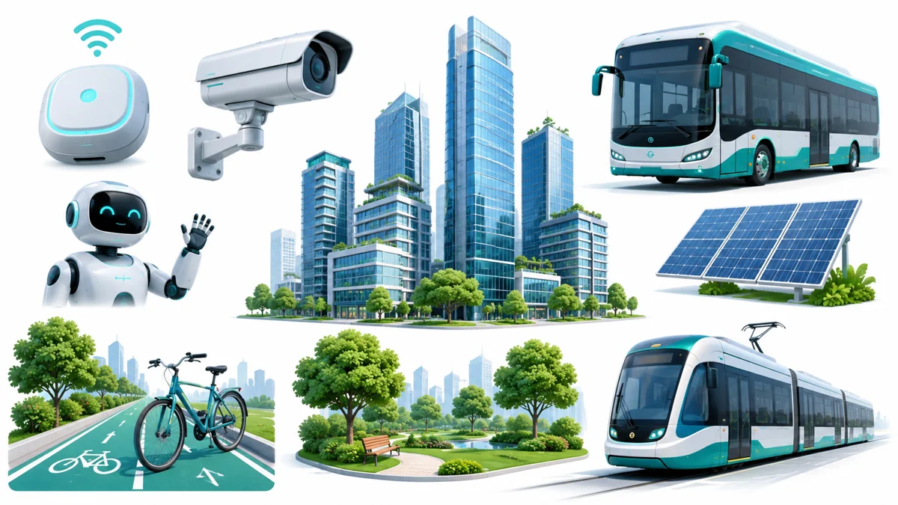
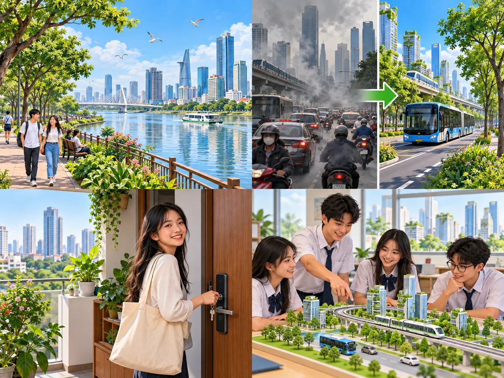

An exhibition
of future cities
Lesson 1 — Getting started
3Talk about green cities and smart cities
- 📚
recognise key words about future cities
- 🎧
understand a conversation about green and smart cities
- 💬
use phrases to describe a future city
- 🏙️
design and present your own future city
Warm-up
Look and guess
5 minutesWhat can you see in a smart city?

I can see … · There is / There are … · A future city may have …
Greener or smarter?
- 📷 smart cameras
- 📡 sensors
- 🤖 robots
- 🚌 electric buses
- 🚊 trams
- 🌳 green areas
- 🚲 bicycle lanes
- 🏢 high-rise buildings
- ☀️ solar panels
New words
Look · listen · repeat
7 minutes
impact
(n) /ˈɪm.pækt/ tác động
private vehicle
(n) /ˌpraɪ.vət ˈviː.ə.kəl/ phương tiện cá nhândweller
(n) /ˈdwel.ə(r)/ cư dân
sensor
(n) /ˈsen.sə(r)/ cảm biến A sensor detects movement.infrastructure
(n) /ˈɪn.frəˌstrʌk.tʃə(r)/ cơ sở hạ tầngoperate
(v) /ˈɒp.ər.eɪt/ vận hành Computers operate the city’s transport system.Answer in teams
1. I detect movement, light or temperature. sensor
2. I am a person who lives in a city. (city) dweller
3. Roads, transport and power systems are examples of me. infrastructure
4. I am a car owned and used by one person or family. private vehicle
Practice
Ms Smith, Nam and Mai · Tasks 1–4
20 minutesAn exhibition of future cities · 1
An exhibition of future cities · 2
A green city · 3–4
A green city · 5–6
A green city · 7–8
A smart city · 9–10
A smart city · 11–13
A smart city · 14
Gist: what are the two models of future cities? a green city and a smart city
Future cities — complete the notes
Green city
More than 50% of it is made up of (1) green areas.
Public transport will help reduce (2) traffic jams and pollution.
Smart city
AI (3) technologies will help the city operate more efficiently.
High-rise buildings will help solve the (4) housing problems.
1–5 + a–e
a city · b infrastructure · c transport · d vehicles · e buildings
1. public c · public transport
2. private d · private vehicles
3. modern b · modern infrastructure
4. high-rise e · high-rise buildings
5. smart a · smart city
Sentence detective
1. It seems a good solution to many environmental problems.
2. The modern infrastructure of the city looks beautiful.
3. I ’m thinking of living in a smart city in the future.
seem / look + adjective / noun · think of + V-ing
Your future city
Design and present
10 minutesDesign your future city
- City name
- Transport
- Green areas
- Technology
- Buildings
- Special feature
Present it
Welcome to ____ City. Our city will have ____. People will travel by ____. Smart technology will help ____. We think our city will be ____.
Vote: Greenest · Smartest · Most creative
In the future, cities will … because …
- 🌳
Green city
green areas · public transport
- 🤖
Smart city
AI · cameras · sensors
Homework
1. Do the Getting started exercises in the workbook.
2. Start your Unit 3 project: a poster of the ideal city of the future.
3. Get ready for Lesson 2 — Language.